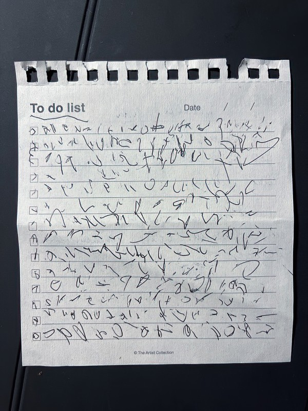

Abandoned car, 2022

В Тайланде природа забирает свое назад очень быстро.
В Тайланде природа забирает свое назад очень быстро.

Несмотря на то, что они выглядят, как список задач, это все же его "мысли")

Продолжаю эксперименты с форматом. Снимаю на Ляйку, проявляю, сканирую и печатаю на бумаге Instax.
The New York Times провели свое расследование убийств в Буче, и смогли идентифицировать российских военных, причастных к этим зверствам.

Снимок сделан ляйкой, а потом напечатан на бумаге для Instax'а
Хорошее интервью Аркадия Островского в Русских норм.
Шикарные истории и снимки!
Несколько картинок из нашего виза-рана в Куала-Лумпур:


Хорошее интервью Натальи Зубаревич.
Не перестаю удивляться, как вообще можно воспринимать что-то, сказанное в такой злобной и агрессивной манере? Что за люди все это говорят, и что за люди, которые все это слушают?